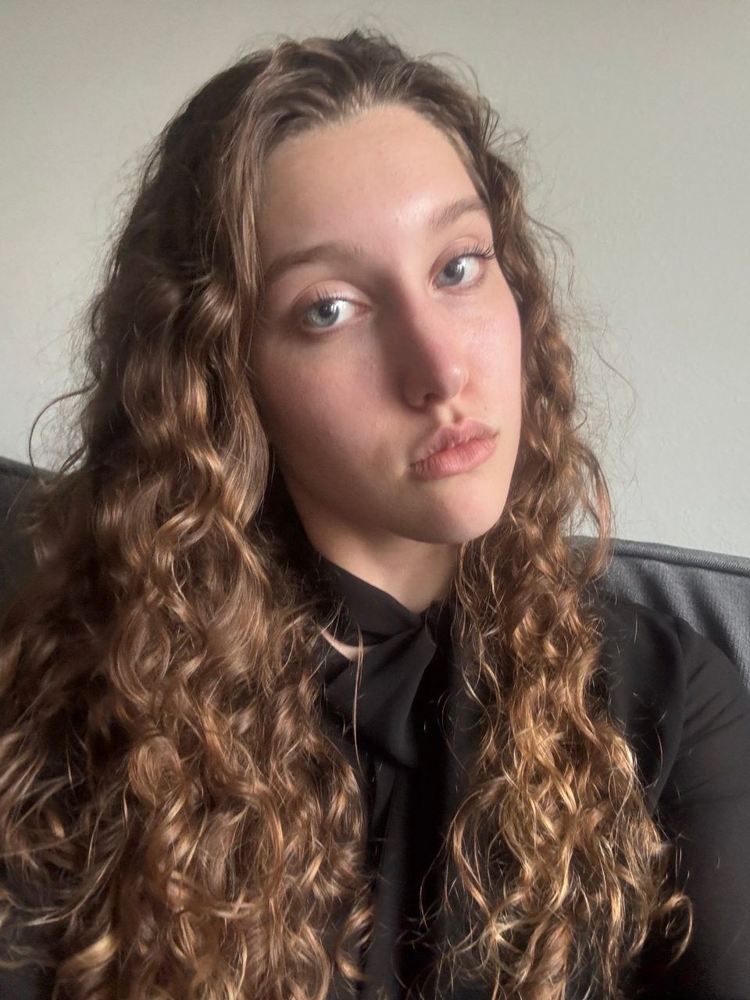

Место учебы
Фундаментальная и прикладная лингвистика, НИУ ВШЭ, Москва
Классная девчонка

Фундаментальная и прикладная лингвистика, НИУ ВШЭ, Москва
Москва
Люблю танцевать (занимаюсь этим профессионально уже более 5 лет) и кататься на сноуборде.
Интересуюсь музыкой и театром, часто хожу на разные постановки и пишу на них небольшие рецензии.
В 2025-2026 я руководила проектом "Культ Культуры" (этот проект - часть социально-полезной деятельности Лицея). В разных форматах мы рассказывали о живописи, литературе, музыке, скульптуре, театре и архитектуре, а также проводили оффлайн мастер-классы и другие мероприятия. Проект активен и сейчас, над ним с большой любовью и вниманием работают другие лицеисты.